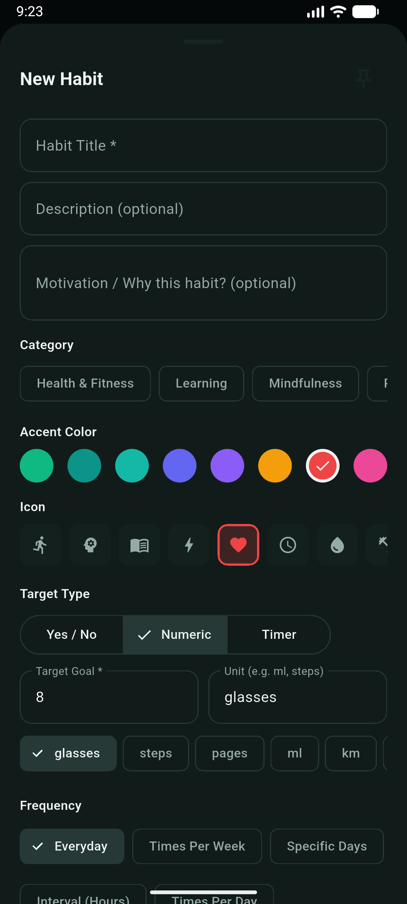
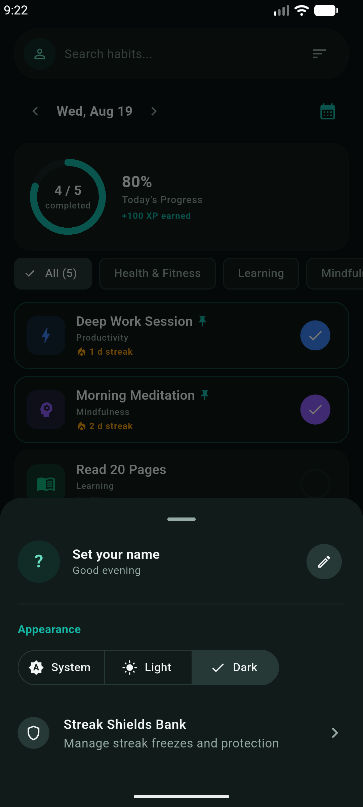
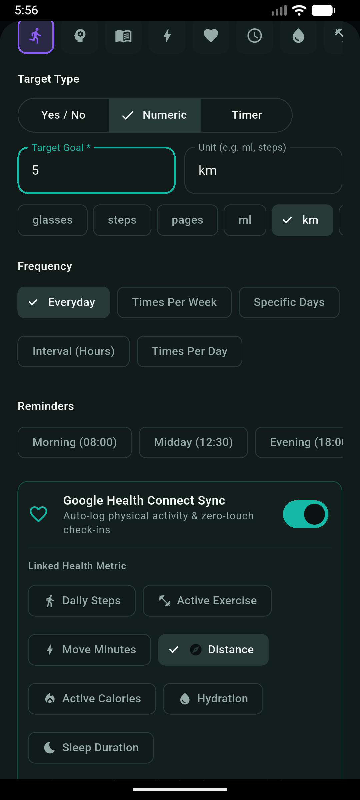
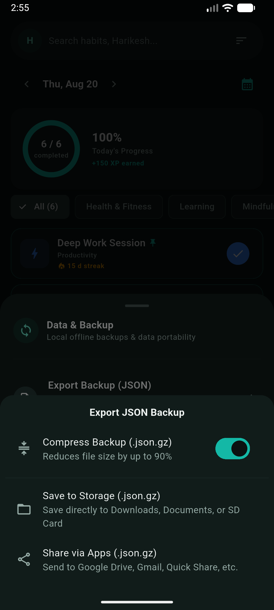
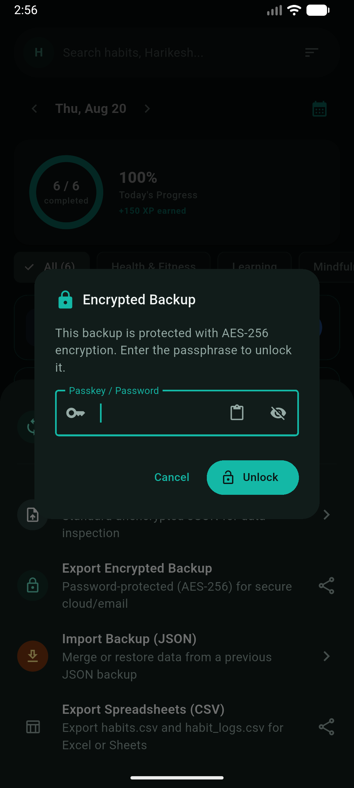

Table of Contents
- Architecture & Privacy
- Daily Dashboard & Logging
- Recurrence Schedules
- Target Engines
- Elastic Goals & Bad-Day Mode
- Habit Stacking Routines
- Abstinence & Sobriety
- Archived Habits Management
- Notifications & Actions
- Home Screen AppWidgets
- Launcher Shortcuts
- Midnight Rollover
- Profile & Appearance
Phial user guide
Phial tracks daily habits, focus sessions, and wellbeing reflections on your phone. This guide covers local Drift SQLite storage, check-ins, reflections, the circular focus timer, streak shields when you miss, XP and titles from Novice to Grandmaster, badges, analytics heatmaps, reminders, home screen widgets, and midnight rollover.
1. Architecture & Local-First Privacy
Phial is built from the ground up on Clean Architecture with unidirectional reactive data flow powered by Flutter and Riverpod. Your data never leaves your device.
- Reactive Drift SQLite Database: All tables (Habits, Logs, Reflections, Categories, Shields, Gamification, Achievements) are managed locally on your device with type-safe DAOs and sub-millisecond queries.
- Zero Telemetry & Zero Ads: The app contains no remote tracking SDKs, analytics beacons, or third-party network calls. Your personal routines and daily thoughts remain 100% private.
- Full Offline Capability: Every single feature, including timer sessions, reflection logging, streak calculations, and badge unlocks, operates offline without needing an active internet connection.
2. Core Habit Tracking & Daily Dashboard
The Daily Tracker screen acts as your primary dashboard for reviewing intentions, logging completions, and maintaining momentum.

Dashboard Features
- Interactive Date Stepper: Jump backward to review past logs, inspect historical adherence, or return directly to today.
- Completion Progress Ring: Live circular progress indicator calculating today's completion percentage (e.g. 80%) and total XP earned today (+100 XP).
- Category Filter Chips: Instant filtering across Health & Fitness, Learning, Mindfulness, Productivity, or custom user categories.
- Pinned Habit Priority: Pinned habits always stay at the top of your list for immediate access.
- 48dp Tap Targets: Designed for ergonomic, one-handed check-ins with tactile haptic feedback.
Recurrence Schedules
Phial supports four flexible frequency types to accommodate diverse real-world routines:
- Daily: Scheduled for every calendar day. Unlogged days reset streaks unless protected by a Habit Shield. Current in-progress days are preserved while the day is active.
- Weekly Target: Configure a target number of completions per week (e.g. 3 times per week). Evaluated strictly on canonical Monday through Sunday week boundaries. Streaks increment in units of completed weeks.
- Custom Days: Designate specific active weekdays (e.g. Mon, Wed, Fri). Non-scheduled days are automatically skipped by the streak engine without breaking active streaks.
- Interval (Every N Days): Recurring interval rhythms (e.g. Every 2 days or Every 3 days) anchored to your habit creation date.
Target Calculation Engines
Four specialized target engines ensure accurate logging for any habit type:
- Boolean Targets: Binary 1-tap completion checkmark with system haptic feedback (e.g. Morning Meditation).
- Numeric Targets: Quantitative goals with customizable units (e.g. glasses, steps, pages, ml, km), quick delta steppers (- / + / +5 / +10), and direct numerical entry (e.g. Read 20 Pages).
- Focus Timer Duration: Dedicated focus duration goals (e.g. 45 minutes Deep Work) with 1-tap launch into the Zen timer.
- Sub-Day Time Slots: Divides a habit into multiple time-windowed intervals (e.g. Morning, Afternoon, Evening) with individual segment check-ins.

Archived Habits & Lifecycle Management
When a habit is paused or no longer part of your active routine, archiving preserves all your historic completion records, reflections, and streak statistics without cluttering your daily dashboard.

- Dedicated Category Chip: The Daily Tracker provides an “Archived” filter chip displaying the live count of archived habits.
- Read-Only Safeguards: Archived habits render with static “Archived” tags on cards and in the Habit Detail view. Interactive check-ins, numeric steppers, and focus timer actions are disabled to prevent accidental mutations.
- Paused Notifications: Scheduled reminders and alarms for archived habits are automatically paused in the background.
- Exclusion from Rollover: Archived habits are excluded from midnight rollover missed-day calculations and do not consume Habit Shields.
- Instant Restoration: Reactivate any archived habit with one tap from the Habit Detail menu, restoring active tracking and reminders seamlessly.
Elastic Goals & Bad-Day Mode
Traditional habit tracking suffers from an all-or-nothing trap: missing a full target on an exhausting day resets your streak to zero, triggering motivation collapse. Elastic Goals introduce a three-tiered milestone system (Mini, Base, Elite) that adapts seamlessly to daily energy levels.

Three-Tiered Targets & Momentum Preservation
- Mini Target (Bad-Day Mode): A low-friction minimum baseline (e.g. 5 pages of reading instead of 20). Reaching the Mini target preserves your streak continuity on difficult days while awarding
+5 XP. - Base Target (Standard Benchmark): Your daily standard goal (e.g. 20 pages) that forms your consistent routine baseline while awarding
+20 XP. - Elite Target (High Energy): A stretch milestone (e.g. 40 pages) for high-motivation days that pushes your personal best while awarding
+35 XP.
Dynamic Tiered XP Scaling
XP rewards scale proportionally with your effort: 5 XP for Mini, 20 XP for Base, and 35 XP for Elite. Active streak multipliers (up to 2.0x) amplify these rewards on top of base points.
Interactive Milestone Check-Ins
- One-Tap Milestone Bar: Habits with Elastic Goals render a dedicated 3-tier milestone bar directly on the habit card and habit detail screen.
- Live Tier Badges: The card header displays your current tier status (e.g. Mini (Momentum Saved) • 2 d streak or Elite Achieved).
- Flexible Customization: Configure custom Mini and Elite numeric values directly in the habit creation or edit sheet.

Habit Stacking Routines & Flow Execution
Habit Stacking leverages the established behavioral psychology formula: “After [Current Habit], I will [Next Habit]”. Instead of viewing daily habits as isolated tasks, Phial enables you to group habits into sequential chains (e.g. Morning Momentum, Workday Startup, Evening Wind-Down) and execute them through a guided, full-screen player.

Routines & Stacks on Daily Dashboard
- Dedicated Stacks Section: The Daily Tracker features an expandable Routines & Stacks section displaying active daily routines alongside standard single-habit cards.
- Real-Time Step Breadcrumbs: Live visual step chips indicate completed habits (with strikethrough checkmarks) and the currently active target step in the flow.
- Quick Flow Actions: One-tap Resume button immediately jumps back into active routines, while Replay allows repeating routines anytime.
- Collapsible Hierarchy: Easily collapse or expand routines to maintain a clean, organized dashboard.
Reorderable Routine Builder
- Reorderable Step Chain: Drag-and-drop handles allow you to rearrange habit steps effortlessly, with automatic step numbering and First step trigger indicators.
- Target Time Windows: Schedule routines for specific time windows: Morning (06:00–10:00), Afternoon (12:00–16:00), Evening (18:00–22:00), or Anytime.
- Visual Customization: Assign custom color theme accents (Blue, Purple, Emerald, Amber, Red, Pink, Cyan, Violet) and expressive stack icons (Sun, Moon, Zap, Link, Activity).
- Stack Completion Bonus XP: Configure dedicated bonus rewards (e.g.
+30 XP) awarded exclusively when completing the entire sequence in order. - Scheduled Days & Reminders: Configure custom active days of the week and routine reminder notification alarms.


Full-Screen Guided Routine Player
- Contextual Step Prompts: Displays clear transition cues (e.g. “After Hydration Intake → Next: Read 20 Pages”) to eliminate decision fatigue.
- Integrated Timers & Target Controls: Features animated circular countdown and stopwatch timers for duration-based habits, with step progress bars and target steppers.
- Step Advance & Skip Controls: Tap Done & Next to complete the current habit and smoothly advance, or tap Skip Step when life requires flexibility.
- Inline Reflection Notes: Optional 1-line micro-reflection input directly inside the active step flow without disrupting momentum.
- Haptic Feedback & Celebration: System haptic feedback on step completion, culminating in a full-screen celebration screen awarding combined base habit XP and routine bonus XP.
Drift SQLite Persistence & Sync Architecture
Routine configurations, habit schemas, and execution histories are persisted locally in Drift SQLite via the habits, habit_routines, and routine_logs tables (schema version 9). All records include soft-deletion tombstone tracking and are fully serialized in AES-256 encrypted backups, Gzip archives, and deterministic 2-way sync envelopes.
Abstinence Tracking & Sobriety Mode
Not all habits are about doing more; breaking destructive patterns (such as smoking, doomscrolling, alcohol, or junk food) requires tracking continuous abstinence. Phial provides dedicated sobriety tools tailored to breaking bad habits.

Creating an Abstinence Habit
- Quit / Sobriety Goal Type: Switch the habit goal type from “Build Habit” to “Quit / Sobriety” in the creation sheet.
- Clean Start Date: Set your exact sobriety or clean timestamp (defaults to today, customizable to any past date).
- Passive Clean Tracking: Unlike positive habits that require manual check-ins, abstinence streaks increment automatically for every clean day lived. Cards display a green “Clean” badge on the Daily Tracker.
- Streamlined Configuration: Irrelevant target inputs (e.g. numeric targets, frequency schedules) are automatically hidden for clean simplicity.
Live Sobriety Clock & Milestone Progression
- High-Precision Counter: The Habit Detail screen features a real-time counter tracking elapsed Days, Hours, Minutes, and Seconds of continuous abstinence.
- Milestone Hierarchy: Progress toward celebrated milestones: 24 Hours, 3 Days, 1 Week, 1 Month, 3 Months, 6 Months, and 1 Year with dynamic percentage progress bars.
- Compassionate Relapse Reset: If a slip occurs, tapping “Reset Clock” opens a compassionate dialog encouraging reflection without guilt. You can optionally log what triggered the slip to identify behavioral patterns.
- Streak & Shield Decoupling: Abstinence streaks measure continuous clean days; Habit Shields and freezes are decoupled to reflect authentic clean duration.

Urge Surfer Mindfulness Tool
Cravings and impulses typically peak within 2 to 3 minutes before naturally subsiding like ocean waves. The Urge Surfer tool equips you with a science-backed box breathing exercise to ride out acute cravings.

4-4-4-4 Box Breathing Technique
- Visual Guidance Ring: A smooth expanding and contracting circular breathing animation guides your breathing rhythm across 4 distinct phases: Inhale (4s) → Hold (4s) → Exhale (4s) → Hold (4s).
- Ambient Audio Chime Cues: Optional acoustic singing bowl chimes gently signal phase transitions without needing to stare at the screen.
- Sensory Haptic Prompts: Gentle system haptics accompany each breathing stage for tactile grounding.
- Session Timer & Controls: A dedicated 2-minute countdown timer with intuitive Pause and Restart controls.
- Emergency Craving Grounding: Dynamic psychological affirmations and coping tips (“Urges are like ocean waves — they rise, peak, and naturally fade away”) help de-escalate acute tension.
3. Check-In Reflections & Mindfulness
Building habits is not just about ticking boxes; it is about tuning into how your daily routines influence your wellbeing. Phial allows you to capture quick, optional reflections right after completing any habit.

Energy, Mood & Micro-Notes
- 5-Point Energy Level Scale: Rate your physical and mental stamina from
1 (Low),2 (Fair),3 (Good),4 (High), to5 (Peak). - Mood Tags: Select representative emotional states: Energized, Happy, Calm, Focused, Tired, or Stressed.
- Micro-Note Context: Add a brief reflection (up to 120 characters) capturing key context, hurdles, or breakthroughs.
- Frictionless Flow: Easily submit with "Save Reflection" or tap "Skip" if you are in a rush.
Habit & Energy Correlation
Every reflection is stored alongside your habit completion log. Over time, the built-in Wellbeing Correlation Engine analyzes your logged reflections to measure the tangible impact of habit consistency on your self-reported energy levels.
4. Circular Focus Timer, Zen Mode & Audio
The Circular Focus Timer provides an immersive, distraction-free environment for deep work, study, reading, exercise, and meditation.
Timer Features & Background Isolate
- Persistent Background Isolate: Operates inside an independent background isolate and binds to an Android foreground service. Screen lock, multitasking, or sleep states do not interrupt your session.
- Lock-Screen Notification Controls: Pause, resume, or stop the countdown directly from the Android notification shade or lock-screen.
- Quick Delta Steppers: Add or subtract 5 or 10 minutes on the fly (+5m, -5m, +10m, -10m) without restarting.
- Automatic Session Logging: Completed sessions write elapsed duration directly into the habit history database and award XP.
Ambient Soundscapes
An integrated ambient sound player helps you drown out background noise and maintain focus. Built-in soundscapes include Forest Birds, Gentle Rain, White Noise, and Cafe Ambience.
Do Not Disturb (DND) Automation
When granted the Android Notification Policy access permission, Phial synchronizes Do Not Disturb mode dynamically with the native focus timer service:
- Live Mode Synchronization: Silences interruptions and mutes notifications when the countdown starts or resumes.
- Dynamic State Badges: Displays real-time DND Active (when suppressing notifications) or DND Standby status indicators.
- Automatic Lifecycle Teardown: Restores your device sound profile immediately when the timer is paused, manually stopped, reset, or completed.

5. Habit Shields & Streak Protection
Life happens. Missing a single day should not erase your hard work. A Habit Shield acts as a streak freeze, protecting your active streak when you miss a day. Phial banks shields automatically as you build consistency.

Streak Freeze & Protection Bank
- 14-Day Consistency Earning: For every 14 distinct days a habit is completed, you earn 1 Habit Shield in your bank. A live progress bar tracks days remaining until your next shield.
- Missed Habit Protection: View yesterday's missed habits with 1-tap "Protect" buttons to retroactively freeze a day before streaks break.
- Auto-Consume on Midnight Rollover: Automatically protect missed days on midnight rollover if an active streak is at risk.
- Max Shield Capacity: Configurable bank limit (with simple + / - steppers) to keep discipline incentives balanced.
- Three Application Methods: Auto-protection on rollover, tap past missed dates in the Habit Detail calendar, or long-press cells in the Week Matrix.
When a day is shielded, the streak engine preserves your unbroken chain. For example, logging Monday, shielding Tuesday, and logging Wednesday yields an unbroken 3-day active streak.
Scope & Decoupling: Habit Shields apply strictly to active positive habits. Abstinence/sobriety habits operate on continuous clean durations without consuming shields, and archived habits are skipped during rollover.
6. XP, Titles & 33 Badges
Stay motivated with a rewarding progression system. Every completed check-in awards XP, raises your title from Novice toward Grandmaster, and unlocks milestone badges.
Base XP Calculation
- Check-in:
+15 Base XPper completed habit. - Numeric Delta: Scaled proportionally by completion percentage (up to
+20 Base XP). - Focus Timer:
+1 XP per focused minute(up to+45 Base XPper session). - Routine Completion Bonus: Configurable stack bonus (e.g.
+30 XP) on completing sequential chains.
Streak Multipliers
Maintaining consecutive streaks scales all earned XP:

| Consecutive Streak | XP Multiplier | Status Tier |
|---|---|---|
| 0 – 2 Days | 1.00x | Standard |
| 3 – 6 Days | 1.10x | Sparking |
| 7 – 13 Days | 1.25x | Ignited |
| 14 – 29 Days | 1.50x | Blazing |
| 30+ Days | 2.00x | Unstoppable |
Quadratic Level Progression
Level progression follows a quadratic curve: Level L requires 100 × L² cumulative
XP. Player titles advance through:
- Novice (Levels 1–3): Getting started with initial consistency.
- Apprentice (Levels 4–7): Developing stable daily routines.
- Adept (Levels 8–14): Strong momentum with multi-category adherence.
- Pathfinder (Levels 15–24): Master of long-term habit streaks and focus work.
- Grandmaster (Level 25+): Unshakeable mastery over daily discipline.
33 Unlockable Achievement Badges
Filter badges by category (Streaks, Volume, Diversity, Perfection, Routines) and inspect your unlocking journey:

| Category | Badges Included | Tier & Requirements |
|---|---|---|
| Streak Milestones | Spark of Will, Habit Builder, Fortitude, Unstoppable Force, Iron Discipline, Centurion | 3d (50 XP), 7d (100 XP), 14d (200 XP), 21d (300 XP), 30d (500 XP), 100d (1500 XP) |
| Volume & Check-ins | First Step, Tenacious, Half Century, Century Club, Master of Routine, Habit Legend | 1 check-in (25 XP), 10 (75 XP), 50 (200 XP), 100 (400 XP), 500 (1000 XP), 1000 (2500 XP) |
| Category Diversity | Balanced Life, Renaissance Soul, Polymath, Health Champion, Focus Titan, Mindful Master | 2 cats (50 XP), 3 cats (150 XP), 5 cats (350 XP), 20 health (200 XP), 20 work (200 XP), 20 mind (200 XP) |
| Routine Chains & Stacking | Chain Reaction, Habit Stacker, Morning Virtuoso, Routine Virtuoso, Master of Flow | 1 routine (50 XP), 5 routines (100 XP), 7 morning (200 XP), 25 routines (300 XP), 100 routines (1000 XP) |
| Perfect Days | Flawless Day, Triad of Perfection, Golden Week, Perfectionist | 1 perfect day (50 XP), 3 perfect days (150 XP), 7 consecutive (400 XP), 30 total (1000 XP) |
| Focus Mastery | Deep Work, Flow State, Zen Master | 60 focus mins (75 XP), 300 mins (250 XP), 1000 mins (750 XP) |
| Player Mastery | Apprentice Ascent, Pathfinder Journey, Grandmaster Summit | Reach Level 5 (200 XP), Level 10 (500 XP), Level 20 (1500 XP) |
7. Analytics, 7-Day Matrix & Monthly Heatmaps
Phial provides comprehensive visibility into your daily, weekly, and monthly consistency through clean visual charts, adherence matrices, and correlation engines.

7-Day Week Matrix
- Monday–Sunday ISO Grid: High-density weekly overview showing all active habits across the week.
- Matrix Indicators: Completed (solid circle), Shielded (cyan shield icon), Missed (dim outline), Off-Day (dash).
- Quick Long-Press Freeze: Long-press any day cell to freeze or unfreeze dates on the fly.
- Daily Completions Bar Chart: Visual bar graph highlighting total habit check-ins for each day of the week.
Habit Detail Screen & Streak Freezes
Opening any habit card reveals in-depth performance metrics, streak freeze indicators, and dedicated focus controls:
- Streak Freeze Active Indicator: Clear visual confirmation when a shield is actively protecting your streak chain on a selected date.
- 10-Dot Progress Bar: Visual 10-segment milestone tracker showing progress toward your next consistency tier.
- Streak & Record Stats: Current streak, all-time best record, total completions, and completion rate.
- Integrated Focus Timer: Quick session launcher with configurable duration delta chips (-10m, -5m, 45m Goal, +5m) and DND status.

Multi-Dimensional Analytics, Trend Curves & Heatmaps
The dedicated Analytics tab aggregates overall routine performance, consistency scores, and wellbeing correlations:

- Consistency Score: Dynamic percentage score comparing consistency against your rolling 30-day baseline.
- Summary Metric Tiles: Best streak, completed habits count, and total focus time accumulated.
- Top Habits Breakdown: Colored adherence bars ranking your top 5 most consistent habits over 30 days.
- Rolling Adherence Spline: Visual trend curve tracking daily adherence percentages over 7-day and 30-day windows.
- Wellbeing & Energy Correlation: Measures self-reported energy levels on completed habit days versus missed days, with recent weekly trends.
- Monthly Consistency Heatmap: GitHub-style density grid displaying low, moderate, high, and peak consistency days across the calendar month.

8. System Integrations, Notifications & Settings
Phial integrates natively with Android system services to provide accurate background alarms, lock-screen controls, widgets, and customization.

Profile, Appearance & Bank Navigation
- Custom User Name: Set your personal greeting name.
- Appearance Modes: Seamlessly switch between System Default, Light Mode, and Dark Mode.
- Direct Shield Bank Access: Quick shortcut to your Streak Shields Bank and freeze policies.
- Data & Backup Hub: Direct entry point to manage local backups, zero-knowledge encryption, and data exports.
Exact Notifications & Actions
- Per-Habit Reminder Scheduling: Set custom daily reminder times for each habit.
- Exact Alarm Execution: Uses Android exact alarms (
exactAllowWhileIdle) so reminders trigger precisely even during deep sleep (Doze mode). - Notification Actions:
Mark Done,+Delta Increment, orView Habitdirectly from notifications.
Home Screen AppWidgets (Responsive & Scrollable)
Stay on top of your habits directly from your Android home screen with 4 specialized AppWidgets featuring high-DPI canvas graphics and responsive grid layouts (2x2, 2x3, 2x4, and 4x4):
- 1. Daily Focus Widget: Glanceable overview displaying daily completion percentage ring, completed habit count, best streak, today's focus minutes, and earned XP.
- 2. Today's Habits Checklist Widget: Interactive scrollable
ListViewwith 1-tap check-in fill-in intents, pinned habit prioritization, and real-time state sync. - 3. Streaks at Risk Widget: Highlights habits scheduled today that are uncompleted to protect active streak chains.
- 4. XP & Mastery Widget: Displays current level, title, XP progress bar, and next milestone badge progress.
- Direct Deep Linking: Tap any widget header to open the app or launch directly into habit creation.
Dynamic Launcher Shortcuts
Long-press the Phial icon on your home screen or app launcher to access dynamic shortcuts for your top pinned habits, launching directly into check-ins or focus sessions.
Midnight Rollover Background Worker
An automated background task executes every night at 00:01:
- Evaluates streak risk for yesterday's uncompleted habits.
- Automatically applies available bank shields if Auto-Consume is enabled.
- Recalculates active streaks and clears day caches.
- Daily Steps: Automatically updates numeric step goals from pedometers and fitness bands.
- Active Exercise: Tracks workout and athletic session durations in minutes.
- Move Minutes: Google Fit-aligned discrete active movement minutes (≥30 steps/min cadence).
- Distance: Total running, walking, and cycling distance with automatic km/miles conversion.
- Active Energy / Calories: Live elapsed daily calorie burn synced in real-time.
- Hydration: Water intake volume with auto-normalizations across ml, liters, and glasses.
- Sleep Duration: Bedtime and sleep tracking logs from sleep sensors and wearables.
- Auto-Populated Targets: Select any metric chip to set default targets or customize your own goal (e.g. 5,000 steps or 45 mins).
- Unit Normalization: Phial automatically converts units between Health Connect and your custom habit settings (e.g. liters ↔ ml, hours ↔ mins).
- Background WorkManager Worker: Periodic background workers keep your habits up-to-date and reconcile late-night activity across the last 3 days.
- Detail Screen Status Badge: Displays real-time sync indicators and links directly to Health Connect settings.
- 1-Tap Manual Sync: Tap the sync button on any habit card, detail screen, or settings sheet to pull fresh metrics immediately.
- Automatic Completion: Habits check off automatically once your target is achieved and earn regular XP rewards.
Google Health Connect Integration
Phial integrates natively with Android's Google Health Connect platform to provide automated, zero-touch habit check-ins synced from Google Fit, smartwatches, and connected health trackers:

7 Physical Health Metrics
Manage permissions and sync controls in Profile Avatar → Google Health Connect:
Zero-Touch Habit Linking
When creating or editing any habit, enable the Google Health Connect Sync toggle:


Live Sync Status & Manual Refresh
10. Data Portability, Secure Backups & Sync Merge
Phial respects your sovereignty over your data. With zero accounts, zero cloud dependencies, and zero telemetry, all your habits, logs, reflections, focus records, and shield transactions can be backed up, encrypted, and merged losslessly across devices.

Data & Backup Hub
Open Settings → Data & Backup to access all backup and export options in a unified bottom sheet:
- Export Backup (JSON): Standard JSON or compressed archive for data preservation.
- Export Encrypted Backup: Password-protected zero-knowledge encrypted bundle.
- Import Backup (JSON): Seamlessly merge or restore data from any previous backup.
- Export Spreadsheets (CSV): Clean CSV tables for external spreadsheet analysis.
Plain & Compressed Backups (.json & .json.gz)
When exporting a standard backup, you can choose between uncompressed human-readable JSON or bandwidth-friendly Gzip compression:
- Gzip Archive Compression (.json.gz): Toggle compression to reduce backup file size by up to 90%, perfect for archiving long tracking histories.
- Save to Storage: Direct integration with Android's Storage Access Framework to save files into your
Downloads,Documents, or external SD card. - Share via Apps: Send backups directly to Google Drive, Nextcloud, Proton Drive, local network drop, or email using the native Android share sheet.
- Automatic Format Detection: On import, Phial automatically detects whether a file is uncompressed or Gzip-compressed and decodes it transparently.

Zero-Knowledge AES-256-GCM Encryption
For maximum privacy when storing backups in cloud drives or transmitting over email, Phial provides military-grade client-side encryption:

- AES-256-GCM Authenticated Encryption: Encrypts entire backup payloads with 256-bit Galois/Counter Mode, ensuring both confidentiality and data authenticity.
- PBKDF2 Key Derivation: Derives cryptographic keys using
HMAC-SHA256with 100,000 iterations and cryptographically secure random 128-bit salts. - Random Passkey Generator: Generate high-entropy, human-friendly passkeys (e.g.
L8MQ-ONHZ-PC17-BHJ1) with 1-tap clipboard copying. - Envelope Header Verification: Validates the
PHIAL_ENC_v1magic header to prevent corrupted or tampered payloads from executing.
- Zero-Knowledge Protection: Encryption and decryption occur 100% locally on your device. Phial holds no keys, backdoors, or master recovery passwords.
- Safe Decryption Prompt: When importing any
.enc.jsonor.enc.json.gzfile, a secure password dialog unlocks and verifies the payload before merging. - Typo & Corruption Protection: Incorrect passkeys produce clear cryptographic verification warnings without corrupting existing database records.

Deterministic Sync & Merge Engine (LWW / CRDT)
Phial uses a deterministic sync merge engine backed by Drift Schema V5, enabling offline multi-device merging without data loss:
- Timestamped Mutations: Every habit, check-in log, reflection, focus session, and shield transaction tracks
updated_atandcreated_attimestamps. - Last-Write-Wins (LWW) Resolution: When importing a backup, newer edits automatically take precedence over older records on a per-entity basis.
- Soft-Delete Tombstones: Deleted habits are tracked with
deleted_attimestamps so deletions propagate cleanly during merge without reviving unwanted habits. - Idempotent Merging: Importing the same backup multiple times is completely lossless and produces identical database state.
Spreadsheet Data Export (CSV)
Need to analyze your habits in Python, R, Excel, or Google Sheets? Phial exports your full history in standard RFC 4180 CSV format:
- habits.csv: Habit metadata, category, frequency rules, target count, current streak, best streak, creation date, and status.
- habit_logs.csv: Individual daily check-in records, numeric progress values, energy levels (1–5), mood tags, micro-notes, and completion timestamps.